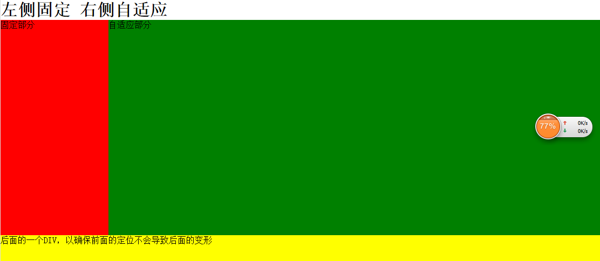
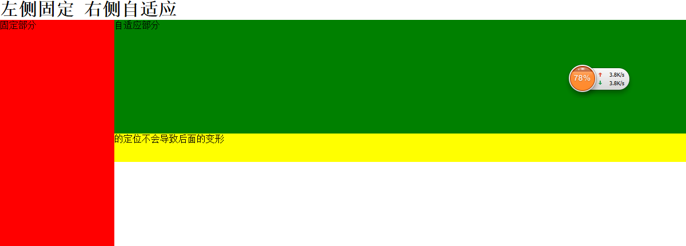

最近学习了一种经典布局，固定左侧或右侧的宽度，另一侧自适应宽度，此种布局挺常用，尤其是像后台，大部分都是采用这种结构，还比如像订餐类的APP，进入商家的时候，会出现一堆饭的列表，左侧是饭的分类，右侧是饭的列表等等。反正挺实用，值得收藏！
html代码：
1 2 3 4 5 6
| <h1>左侧固定 右侧自适应</h1> <div class="box"> <div id="left">固定</div> <div id="right">自适应</div> </div> <footer>后面的一个DIV，以确保前面的定位不会导致后面的变形</footer>
|
他后面还有个#footer，用来测试在前面的定位搞定后会不会导致后面的div错位——如果错位了，那证明我们的定位方法必须改进。
下面列举几个常见的方法：
一、固定宽度区使用绝对定位，自适应区照例设置margin
css代码：
1 2 3 4 5 6 7 8 9 10 11 12 13 14 15 16 17 18 19 20 21 22 23
| .box{ width: 100%; position: relative;<!--相对定位--> } position: absolute;<!--绝对定位--><!-- width: 200px; height: 400px; background: red; top: 0; left: 0; } height: 400px; background: green; margin-left: 200px;<!-- 他的宽度就变成了100%-200，--> } height: 50px; width: 100%; background: yellow; }
|
效果如图：

大家看到这种效果，那么我们算是成功了么？No！！！如果我们改变right的高度，使right的高度比left高度低
如图：

为什么会出现这种问题呢？
原因是绝对定位使left部分脱离了文档流，让其他元素无视了它的存在，使后边的元素错乱，所以绝对定位的方式要么放弃掉要么将footer也绝对定位到底部。
二、通过浮动实现
css代码：
1 2 3 4 5 6 7 8 9 10 11 12 13 14 15 16 17 18 19
| .box{ width: 100%; } float: left; width: 200px; height: 400px; background: red; } height: 200px; background: green; } height: 50px; width: 100%; background: yellow; clear: both;/*因为left浮动会脱离文档流，所以要清楚浮动*/ }
|
三、如果不考虑ie7及以下版本
把.box设为display:table并指定宽度100%,然后把left和right设为display:table-cell;
然后只给left指定一个宽度，那么right的宽度就变成自适应了。
代码很少，而且不会有额外标签。不过这是IE7都无效的方法。
css代码：
1 2 3 4 5 6 7 8 9 10 11 12 13 14 15 16 17 18 19 20
| .box{ width: 100%; display: table; } display: table-cell; } width: 200px; height: 100px; background: red; } background: green; } height: 50px; width: 100%; background: yellow; }
|
四、CSS3的新增属性 calc()
如果不考虑浏览器的兼容问题的话，可以使用CSS3的新增属性 calc() ;calc是calculate的简写，汉语为计算的意思。
css代码：
1 2 3 4 5 6 7 8 9 10 11 12
| width: 200px; height: 200px; background: red; float: left; } width: calc(100% - 200px); background: green; height: 200px; float: left; }
|